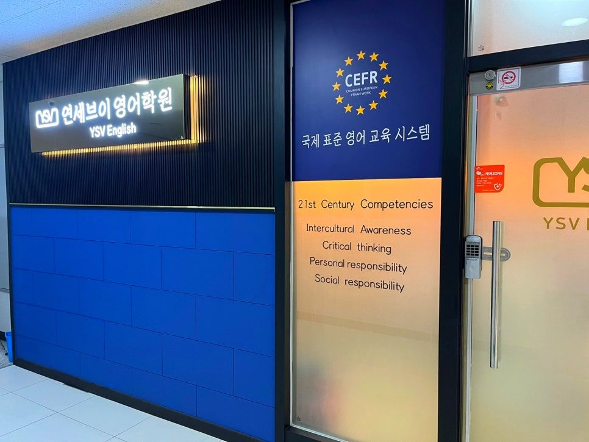
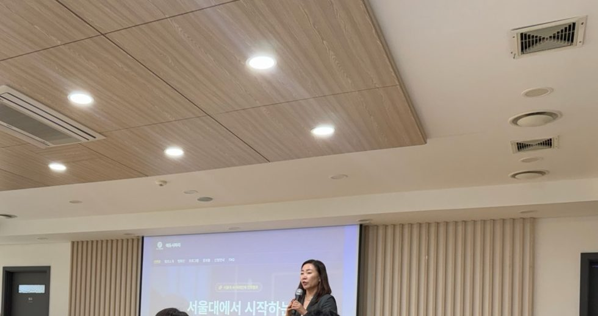

초등 저학년
40분 × 2교시
기초를 탄탄하게. 스토리북을 외워 말하는 모습을 개별 영상으로 보내 드리기도 합니다.
대구 달서구 대천동·월배 영어 전문학원·초·중·고
학년에 맞춘 수업 시간, 매 수업 마지막 교시는 테스트. 그날 배운 것은 그날 확인하고, 부족한 부분은 수요일에 채웁니다. 연세브이의 모토는 ‘꼼꼼함과 경험으로 만드는 진짜 실력’입니다.
대구 달서구 월배로11길 32, 401호 (대천동)
블로그에서 다뤄 온 달서구 인근 학교
블로그에서 다뤄 온 인근 학교 — 초등학교: 한샘초, 대구교대부초, 한솔초, 월배초. 중학교: 월서중, 조암중, 영남중, 대건중, 상원중. 고등학교: 대진고, 대건고, 송현여고, 상원고.
ABOUT YSV
연세브이는 영어 점수에만 몰두하지 않습니다. 아이들이 중학교, 고등학교, 대학교까지 스스로 공부할 수 있는 힘을 기르는 것을 가장 중요한 목표로 둡니다.
상위권 학생이 특별해서 성적이 좋은 것이 아닙니다. 질문하는 습관, 꼼꼼하게 확인하는 습관, 틀린 문제를 끝까지 해결하는 습관 — 그 작은 습관을 초등학생 때부터 수업 안에서 몸에 붙입니다.

“아이를 혼내지 않는 학원보다, 아이를 포기하지 않는 학원이고 싶습니다.”
연세브이영어학원 원장 칼럼 · 2026.8.21
“왜 못했니?”라고 묻기 전에 “어디에서 막혔을까?”를 먼저 생각합니다.
CARE SYSTEM
아이마다 부족한 부분을 찾아 끝까지 채우는 것 — 연세브이가 아이를 관리하는 방식입니다.
＊기준 공식 블로그 「교육 및 수업 운영 안내」(2026.7.21)와 학원 홈페이지 안내. 반 편성과 교시는 학년·수준에 따라 달라질 수 있으며, 자세한 반 배정은 레벨테스트 후 안내합니다.
수업 운영 안내 원문 보기TEST SYSTEM
같은 반이라도 어휘 수준과 암기 속도가 다릅니다. 그래서 테스트도 학생에 맞춰 봅니다.
CLASS HOURS
학생의 학년과 수준에 따라 교시 수와 수업 길이가 다릅니다. 반 배정은 레벨테스트 후 안내합니다.
40분 × 2교시
기초를 탄탄하게. 스토리북을 외워 말하는 모습을 개별 영상으로 보내 드리기도 합니다.
45분 × 3교시
실력의 도약. 문법 · 독해 · Speaking & Listening · 테스트로 짜인 수업입니다.
50분 × 3교시
심화와 실전까지. 주 2회, 문법 · 독해 · 테스트로 내신과 수능을 함께 준비합니다.
진도 수업일수요일 · 맞춤 관리미등원
학생마다 필요한 부분이 다르기 때문에, 수요일은 학생 개개인의 성장을 위한 맞춤형 관리 시간으로 운영합니다.
보강 수업보충 수업원서 읽기영어 액티비티중·고등 테스트 마무리
EXAM PREP
수업을 어디까지 했는가보다, 학생이 실제로 어디까지 자기 것으로 만들었는가를 확인합니다.
모르는 것을 모르는 채로 시험장에 보내지 않으려 합니다.
＊출처: 공식 블로그 「시험기간 일요일, 학원 문을 열었습니다」(2026.9.15) · 「엄마, 여기 원장님이…」(2026.10.11) · 「60점대에서 90점대로」(2026.7.12). 주말 운영은 시험 기간에 한합니다.
PROGRAM
낯선 시험장, 더 넓은 세상을 직접 경험하는 것도 공부의 동기가 됩니다.
긴 글을 끝까지 읽는 힘 · 중요한 내용을 찾는 힘 · 문맥으로 추론하는 힘
익숙한 교실을 벗어나 처음 보는 문제와 제한된 시간 속에서 배운 영어를 실제로 써 보는 경험입니다. 결과는 점수만 전달하고 끝내지 않고, 잘하는 것은 더 단단하게, 부족한 것은 다시 채워 다음 수업으로 가져옵니다.
중학교 입학 전, 공부해서 만나게 될 더 넓은 세상
토요일 문법 특강을 듣던 초6 아이들과 원장이 직접 운전해 다녀왔습니다. 새 친구들과 팀을 이뤄 주제를 고민하고, 포트폴리오를 만들어 발표까지 한 ‘직접 해 보는’ 캠프였습니다.

자세한 일정과 현장 사진은 블로그와 인스타그램에서 먼저 알려 드립니다.
※ 프로그램의 운영 시기·대상은 해마다 달라질 수 있으며, 진행 여부와 세부 일정은 상담 시 안내합니다.
GROWTH STORY
공식 블로그에 원장이 직접 기록한 재원생 이야기입니다. 성적표에는 결과만 남지만, 그 뒤에는 다시 책을 펼친 날들이 있었습니다.
중학교 2학년 · 영어＊
65점91점
2026 1학기 기말초6에 입학, 늦게 시작한 영어개인 사례 · 결과 보장 아님
원문 보기“실력은 먼저 쌓이고, 점수는 나중에 따라옵니다.”
— 성적이 그대로이던 시기에도 읽기·해석 속도가 달라지고 있었다는 원장 기록 중
고등학생 · 영어＊
60점대90점대
2026 1학기시험 후 자가 분석 · 회고개인 사례 · 결과 보장 아님
원문 보기“시험 기간이 아니더라도 영어공부를 열심히 해야겠다는 생각이 들었고, 시험이 끝난 후에도 꾸준히 공부를 해야겠다고 생각했다.”
— 학생이 쓴 시험 회고지 중
재원생 · 영어＊
40·50·60점대를 지나86점
2026.10 게시“학원 그만 다니고 싶어요”개인 사례 · 결과 보장 아님
원문 보기“‘힘들다’는 마음과 ‘할 수 없다’는 결론은 같지 않습니다.”
— 그래도 결국 계속한 아이에 대한 원장 칼럼 중
＊사례 기준 세 사례는 연세브이영어학원 공식 블로그(2026.7.12 · 7.18 · 10.4 게시)에 원장이 기록한 재원생 이야기를 요약한 것이며 실명은 공개하지 않습니다. 점수는 원문에 적힌 학교 시험 영어 점수이고, 개인의 결과로서 같은 결과나 성적 향상을 보장하지 않습니다.
YSV BLOG
2022년부터 쌓아 온 게시글 44건 — 성장 기록, 학원 일상, 원장 칼럼, 수업 안내. 클릭하면 네이버 블로그 원문으로 이동합니다.
점수 뒤에 있던 아이들의 시간
11건 보기 DAILYTOEFL 경시대회, 서울대 캠프, 시험기간
15건 보기 COLUMN중1 2학기, 포기하지 않는 학원, 문법 Q&A
9건 보기 NOTICE수업 운영, 개강, 학교별 시험대비
9건 보기※ 실명은 공개하지 않으며, 개인 사례로서 특정 성적 향상을 보장하지 않습니다.
시험 기간의 교실, 설명회 공지, 이벤트 소식이 가장 먼저 올라옵니다.
“저희 원은 빡빡하지만, 그만큼 아이들도 자부심을 갖고 다니는 학원입니다. 똑똑하고 바른 아이들로 키우고 싶어 하는 부모님의 기대에 부응하며 …”
인스타그램에서 보기LOCATION
대구광역시 달서구 월배로11길 32, 401호. 궁금한 점은 언제든 편하게 문의해 주세요.
대구광역시 달서구 월배로11길 32
401호 (대천동)
월 ~ 금 13:30 ~ 22:00
토요일 09:00 ~ 16:00
성장 기록과 원장 칼럼은 블로그,
매일의 교실 소식은 인스타그램에서 봅니다.
| 과정 | 교습비 (공식 인스타그램 소개 원문) |
|---|---|
| 초등 | 27만 5천원 |
| 중등 | 30만원 |
| 고등 | 35만원 |
＊공식 인스타그램(@ysv1030) 소개에 게시된 금액을 그대로 옮겼습니다(2026.10.17 확인). 공식 블로그 수강료 공지(2022.6.17 · 2024.9.30)의 금액과 같습니다. 교습 기간·반·교시별 세부 사항과 교재비 등 기타경비는 상담 시 안내합니다.
FAQ
상담 전에 많이 받는 질문을 모았습니다.
학년과 수준에 따라 다릅니다. 초등 저학년은 40분 × 2교시, 초등 고학년은 45분 × 3교시, 중등·고등은 50분 × 3교시로 운영합니다. 모든 수업의 마지막 교시는 테스트입니다.
수요일은 새 진도를 나가지 않습니다. 보강·보충 수업, 원서 읽기, 영어 액티비티처럼 학생마다 부족한 부분을 채우는 맞춤 관리 시간으로 운영합니다.
중·고등부는 평일 수업에서 마무리하지 못한 테스트를 수요일·토요일 중 가능한 시간에 추가로 등원해 끝냅니다. 배운 내용은 반드시 확인하고 넘어갑니다.
네. 잘한 부분도 부족한 부분도 있는 그대로 공유합니다. 혼내기 위한 것이 아니라, 어떤 부분을 더 보완하고 학원에서 어떻게 관리할지 함께 계획하기 위해서입니다.
공식 인스타그램 소개에 게시된 교습비는 초등 27만 5천원, 중등 30만원, 고등 35만원입니다. 교습 기간·반·교시에 따른 세부 사항은 상담 때 안내해 드립니다.
053-242-0830 또는 010-9019-3173으로 전화·문자 주시면 됩니다. 반 배정은 레벨테스트 후 안내해 드립니다.
CONTACT
레벨테스트로 지금 위치를 확인하고, 우리 아이에게 맞는 반과 학습 계획을 안내해 드립니다.
수업 · 반 배정 · 레벨테스트 문의
053-242-0830학생 학년 · 학교 · 문의 내용을 남겨 주세요
010-9019-3173Keep going together — 고등에서도 흔들리지 않을 실력, 연세브이가 함께하겠습니다